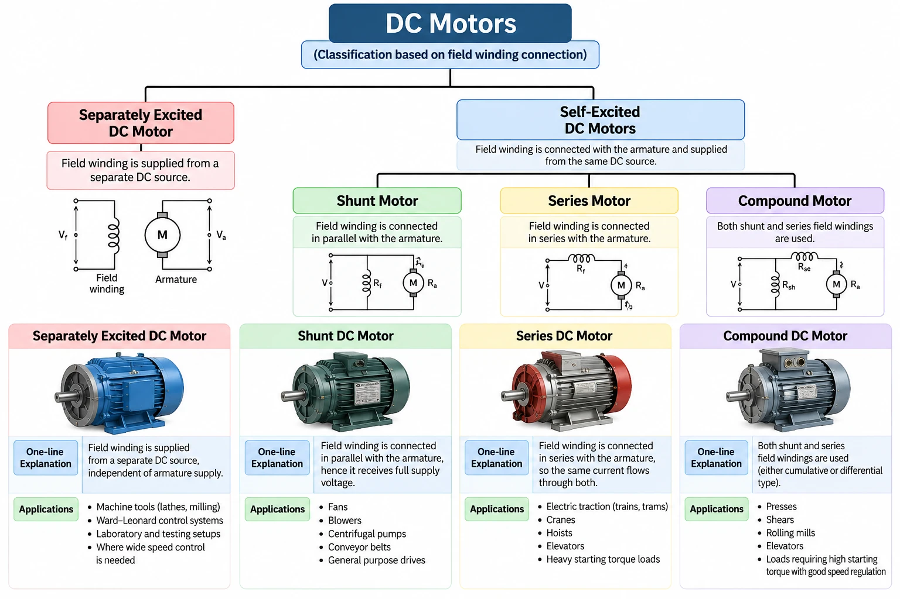
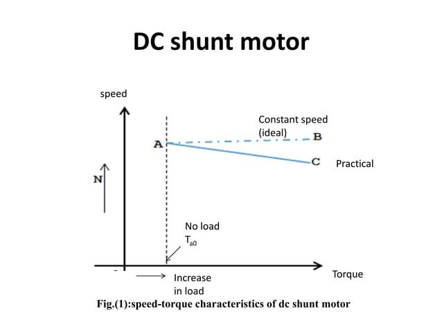
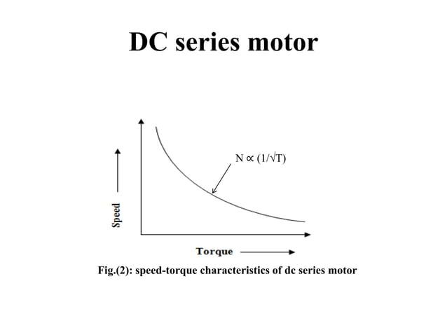
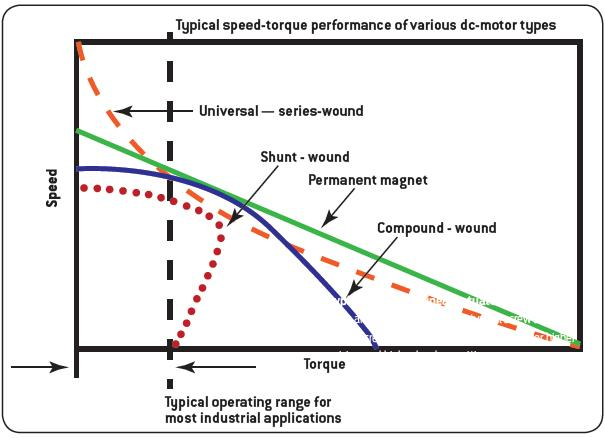
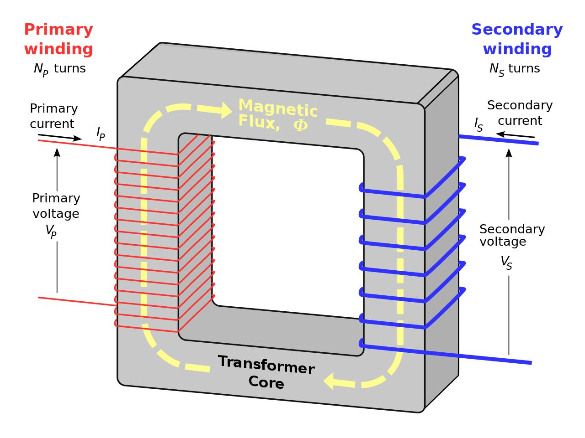
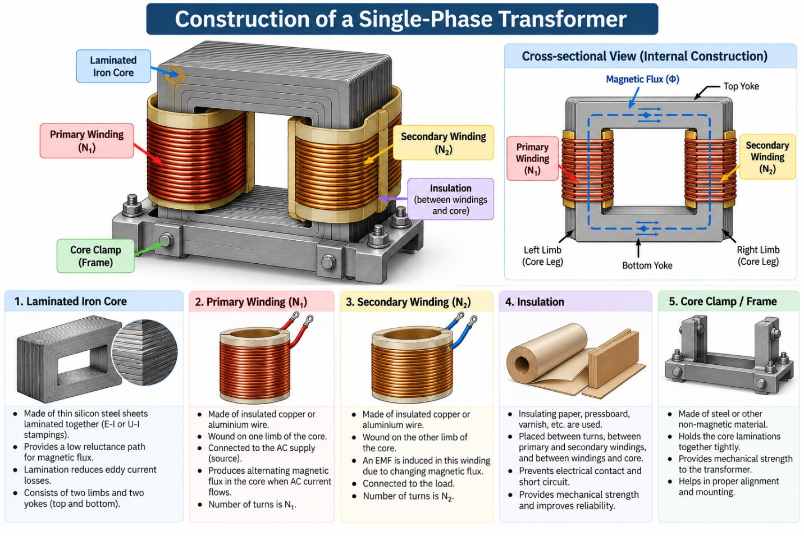
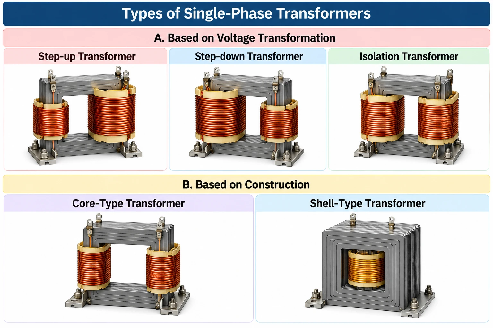

2.1 Basic Principle of Electric Motor
An electric motor is a device that converts electrical energy into mechanical energy (motion). It is the working opposite of a generator, which converts mechanical energy into electrical energy.
When a current-carrying conductor is placed inside a magnetic field, it experiences a mechanical force. In a motor, this force acts on the armature conductors and produces a turning effect called torque, which makes the motor shaft rotate continuously.
An electric motor works on the principle that a current-carrying conductor placed in a magnetic field experiences a force — this is the same force studied as F = B·I·L·sinθ, where B is flux density, I is current, L is conductor length and θ is the angle between the conductor and the field.
Everyday Example — Electric Fan
When a fan is switched ON, electrical energy is supplied to its motor. Current flows through the motor winding, and this current-carrying winding experiences a force in the surrounding magnetic field. The force produces rotation of the motor shaft, turning the fan blades and producing airflow — converting electrical energy into mechanical energy.
Finding the Direction of Force — Fleming's Left Hand Rule
Once the direction of current and the direction of the magnetic field are known, Fleming's Left Hand Rule tells us the direction in which the conductor will move.

Fig 2.1 — Force on a current-carrying conductor placed in a magnetic field
Stretch the thumb, first finger and middle finger of the left hand mutually perpendicular to one another:
- First finger → direction of the magnetic Field (N to S)
- Middle finger → direction of Current in the conductor
- Thumb → direction of the Motion / Force on the conductor
Easy to remember as First – Field, Middle – Motor-current, Thumb – Thrust.
Video — Fleming's Left Hand Rule Explained (Hindi)
2.2 Construction of DC Motor
A DC motor is physically identical to a DC generator — the same machine behaves as a motor or a generator depending on how it is used. Its parts are divided into two groups: a stationary part (Stator) that stays fixed, and a rotating part (Rotor) that turns inside it.
The stator is the stationary (non-rotating) part of the motor. It is mounted on the outer frame and its job is to produce the main magnetic field in which the rotor turns. It consists of the yoke, pole core, pole shoe and field winding.
The rotor is the rotating part of the motor, mounted on the shaft and free to turn inside the stator. It carries the armature current on which the magnetic force acts, producing the torque that rotates the motor. It consists of the armature core, armature winding, commutator and shaft.

Fig 2.2 — Construction of a DC Motor: Front View and Side (Cut Section) View, with parts labelled
| Stator (Stationary Part) | Rotor (Rotating Part) |
|---|---|
| Yoke (Outer Frame) | Armature Core |
| Pole Core & Pole Shoe | Armature Winding |
| Field Winding | Commutator |
| Brushes & Bearing | Shaft |
Part & Function
| Part | Function |
|---|---|
| Yoke | Outer protective frame; also completes the magnetic circuit and provides mechanical support. Usually made of cast iron or silicon steel. |
| Pole Core & Pole Shoe | Pole core holds the field winding; pole shoe spreads the flux over the armature and reduces its reluctance. |
| Field Winding | Carries current to produce the main magnetic field needed for motor action. |
| Armature Core | Laminated iron core that houses the armature winding and carries magnetic flux. |
| Armature Winding | Carries the load current; this is the conductor on which the force (torque) acts. |
| Commutator | Converts the supplied DC into the correct current direction in each armature coil for continuous rotation in one direction. |
| Brushes | Carbon/graphite contacts that supply current from the external circuit to the rotating commutator. |
| Shaft | Transmits the mechanical torque developed to the connected load. |
| Bearing | Supports the shaft and allows smooth, low-friction rotation. |
- The armature core is laminated (thin silicon-steel sheets insulated from each other) rather than solid, to reduce eddy current losses.
- Brushes are kept spring-loaded so they press against the commutator with constant pressure despite wear, ensuring uninterrupted current flow.
- A small, uniform air gap is maintained between the pole shoe and the armature core — too large a gap wastes magnetic flux, too small a gap risks mechanical rubbing.
- A DC motor and a DC generator share the same construction; only the direction of energy conversion (electrical→mechanical vs. mechanical→electrical) differs.
2.3 Working of DC Motor
The working of a DC motor connects everything studied so far: principle → construction → current flow → force → rotation → continuous rotation. The key idea is this — the magnetic field produces a force on the current-carrying armature conductors, and the commutator keeps the armature rotating in the same direction instead of oscillating back and forth.
Working in One Flow
- DC supply is switched ON — current flows through the motor windings.
- Magnetic field is established — field poles produce a magnetic field around the armature.
- Force acts on armature conductors — direction found using Fleming's Left Hand Rule.
- Torque is produced — forces on opposite sides of the armature create a turning effect.
- Armature and shaft rotate — the commutator keeps the torque acting in the same rotational direction.
Step-by-Step Working
When the DC supply is switched ON, current flows through the motor circuit. In a wound-field DC motor, the field winding carries current to produce the magnetic field, while current also flows through the armature winding.
The field winding is wound around the pole cores. When current flows through it, the poles act as electromagnets, setting up a magnetic field from the North pole (N) towards the South pole (S) across the air gap.
The armature conductors carry current and lie inside this magnetic field. By the basic principle of an electric motor, a current-carrying conductor in a magnetic field experiences a force — and the direction of that force is found using Fleming's Left Hand Rule.
Consider a simple rectangular coil placed between the N and S poles. One side of the coil experiences a force in one direction, while the opposite side experiences a force in the opposite direction. These two forces, acting on opposite sides of the coil, create a turning effect called torque, and the armature starts rotating.
As the armature rotates, the sides of the coil keep changing position. If the current direction in the coil stayed the same, the torque would reverse after every half turn and the motor would just oscillate. The commutator prevents this:
- The commutator rotates along with the armature.
- The brushes maintain electrical contact with the commutator.
- After every half-turn, the commutator reverses the current direction in that armature coil.
- This reversal changes the force direction on the conductors at exactly the right moment.
- As a result, torque continues to act in the same rotational direction, and the armature keeps rotating.
The commutator therefore works as a mechanical switching arrangement that converts the alternating force on each coil into continuous, one-directional rotation of the shaft.
Construction Part → Role in Working
| Part | Role During Working |
|---|---|
| Yoke | Supports the motor and provides a path for the magnetic flux. |
| Pole Core & Pole Shoe | Support the field winding and guide the magnetic flux into the air gap. |
| Field Winding | Produces the magnetic field in which the armature rotates. |
| Armature Core | Supports the armature winding and rotates along with the shaft. |
| Armature Winding | Carries current and experiences the force that produces torque. |
| Commutator | Reverses the armature-coil current at the right moment, keeping torque unidirectional. |
| Brushes | Transfer current from the external DC supply to the rotating commutator. |
| Shaft | Transfers the developed rotation to the connected mechanical load. |
| Bearings | Support the shaft and allow smooth, low-friction rotation. |
Video — Working of a DC Motor Explained (Hindi)
2.4 Types of DC Motor
A DC motor can be classified by how its field winding is connected to the armature — this connection decides how the motor behaves under load, which is why it's the standard basis for classification.
- Separately Excited DC Motor — field winding is supplied from a separate DC source, independent of the armature supply.
- Self-Excited DC Motors — field winding is connected with the armature and supplied from the same DC source. Based on how it is connected, this is further split into:
- Shunt Motor — field winding connected in parallel with the armature.
- Series Motor — field winding connected in series with the armature.
- Compound Motor — both shunt and series field windings are used together.

Fig 2.3 — Classification of DC Motors based on field winding connection, with connection diagrams and typical applications
| Type | One-line Explanation | Typical Applications |
|---|---|---|
| Separately Excited DC Motor | Field winding is supplied from a separate DC source, independent of the armature supply. | Machine tools (lathes, milling), Ward–Leonard control systems, laboratory and testing setups, and applications needing wide speed control. |
| Shunt DC Motor | Field winding is connected in parallel with the armature, hence it receives the full supply voltage. | Fans, blowers, centrifugal pumps, conveyor belts, general-purpose drives. |
| Series DC Motor | Field winding is connected in series with the armature, so the same current flows through both. | Electric traction (trains, trams), cranes, hoists, elevators, and other heavy starting-torque loads. |
| Compound DC Motor | Both shunt and series field windings are used (either cumulative or differential type). | Presses, shears, rolling mills, elevators, and loads requiring high starting torque with good speed regulation. |
- In a shunt motor, since the field is connected across the constant supply voltage, flux stays almost constant — this gives it fairly good, nearly constant speed under varying load (good speed regulation).
- In a series motor, field current equals armature current, so flux rises sharply with load. This gives very high starting torque, but speed falls drastically as load increases — and a series motor must never be started on no-load, as it can dangerously over-speed ("run away") with no load to oppose it.
- A compound motor combines both behaviours: the shunt field gives speed stability while the series field adds starting torque. It can be cumulative (series flux adds to shunt flux) or differential (series flux opposes shunt flux, rarely used as it is inherently less stable).
- The separately excited motor's independent field control is the basis of the classic Ward–Leonard speed control system, still referenced in industrial drive systems.
2.5 Speed-Torque Characteristics of DC Motor
Having seen the different types of DC motor, the natural next question is: how does each type actually behave once it's running under load? Speed-torque characteristics answer exactly that — they show how a motor's speed changes as the torque it must deliver changes.
Understanding the Two Terms
- Speed (N): How fast the motor rotates, usually measured in revolutions per minute (RPM).
- Torque (T): The turning force produced by the motor to rotate a load, measured in newton-metre (N·m).
For example, imagine an electric motor lifting a heavy object. The motor needs sufficient torque to lift the object — speed tells us how fast it lifts it.
What Are Speed-Torque Characteristics?
Speed-torque characteristics show the relationship between the speed of a DC motor and the torque it produces, plotted as a graph with Torque on the X-axis and Speed on the Y-axis. The graph helps us understand how a motor's speed changes when the load on it changes.
A. DC Shunt Motor
The field winding is connected in parallel with the armature, so its magnetic field remains approximately constant. When the load torque increases, the speed decreases only slightly — this is why the shunt motor is called an approximately constant-speed motor.

Fig 2.4 — Speed-torque characteristics of a DC shunt motor
Applications: Fans, blowers, centrifugal pumps and machine tools.
B. DC Series Motor
The field winding is connected in series with the armature. When the load increases, the armature current increases, and the magnetic field becomes stronger (before magnetic saturation), producing higher torque. As a result, the motor speed generally decreases sharply as load torque increases — approximately following N ∝ 1/√T.

Fig 2.5 — Speed-torque characteristics of a DC series motor
Applications: Electric traction, cranes, hoists and applications requiring high starting torque.
C. DC Compound Motor
The compound motor has both shunt and series field windings, combining the characteristics of the shunt and series motors. It can provide good starting torque while maintaining better speed regulation than a series motor — its speed-torque curve lies between the shunt and series curves.
Applications: Elevators, presses, shears and rolling mills.
Compare All Three Motors
| Feature | Shunt Motor | Series Motor | Compound Motor |
|---|---|---|---|
| Speed with increasing load | Decreases slightly | Decreases considerably | Intermediate behaviour |
| Starting torque | Moderate | High | Higher than shunt, generally |
| Speed regulation | Good | Poor | Good to moderate |
| Typical applications | Fans, pumps | Cranes, traction | Elevators, presses |

Fig 2.6 — Typical speed-torque performance of various DC motor types (for reference; permanent-magnet and universal motors shown here are beyond this syllabus)
- Shunt: Speed remains almost constant.
- Series: High starting torque; speed varies considerably with load.
- Compound: Combines the advantages of shunt and series motors.
2.6 Working Principle of a Single-Phase Transformer
A single-phase transformer works on the principle of mutual electromagnetic induction. When an AC supply is connected to the primary winding, alternating current flows through it and produces a changing magnetic flux in the transformer core. This changing magnetic flux links with the secondary winding and induces an electromotive force (EMF) in it, according to Faraday's law of electromagnetic induction.
When a load is connected to the secondary winding, current flows through the secondary circuit, and electrical energy is transferred from the primary circuit to the secondary circuit through magnetic flux — without any direct electrical connection between the two windings. The transformer can increase or decrease the AC voltage depending on the number of turns in the primary and secondary windings, while the frequency remains unchanged.

Fig 2.7 — Primary and secondary windings linked by magnetic flux through the transformer core
2.7 Constructional Details of a Single-Phase Transformer
A single-phase transformer mainly consists of a magnetic core, primary winding, secondary winding, insulation, and core clamps or frame. Each part has a specific function in the construction and operation of the transformer.

Fig 2.8 — Construction of a single-phase transformer, with a cross-sectional view showing the flux path
| Part | Function |
|---|---|
| Magnetic Core | Made of thin, insulated silicon-steel sheets laminated together. Provides a low-reluctance path for magnetic flux linking the primary and secondary windings; laminations reduce eddy current losses. The core consists of two vertical limbs and two horizontal yokes. |
| Primary Winding (N1) | Made of insulated copper or aluminium wire, connected to the AC input supply. Carries the alternating current that produces the changing magnetic flux in the core. |
| Secondary Winding (N2) | Made of insulated copper or aluminium wire, magnetically linked with the primary winding through the core. The changing flux induces an EMF in it; it is connected to the output circuit/load. |
| Insulation | Insulating paper, pressboard and varnish, placed between turns, between the primary and secondary windings, and between the windings and the core. Prevents short circuits and improves safety and reliability. |
| Core Clamps & Frame | Hold the laminated core sheets firmly together and provide mechanical support to the whole assembly, maintaining alignment and reducing vibration. |
2.8 Working of a Single-Phase Transformer
A single-phase transformer works on the principle of mutual electromagnetic induction. It transfers electrical energy from the primary winding to the secondary winding through a changing magnetic field, without any direct electrical connection between the two windings.
Step-by-Step Working
- AC supply to the primary winding — when an AC voltage is applied to the primary winding, alternating current flows through it.
- Production of magnetic flux — the alternating current produces changing magnetic flux in the transformer core.
- Linking of magnetic flux — the magnetic flux passes through the core and links with both the primary and secondary windings.
- Induction of EMF — according to Faraday's law of electromagnetic induction, the changing magnetic flux induces an EMF in the secondary winding. An EMF is also induced in the primary winding.
- Supply to the load — when a load is connected to the secondary winding, current flows through the secondary circuit, and electrical energy is delivered to the load.
Important Points to Remember
- The primary winding receives electrical energy from the AC supply.
- The core provides a path for magnetic flux.
- The secondary winding receives energy through electromagnetic induction.
- The frequency of the secondary voltage remains the same as the primary supply frequency.
- The secondary voltage may be higher or lower than the primary voltage, depending on the turns ratio.
In Short
A single-phase transformer operates on the principle of mutual electromagnetic induction. When AC supply is applied to the primary winding, it produces changing magnetic flux in the core. This flux links with the secondary winding and induces an EMF according to Faraday's law. When a load is connected to the secondary winding, current flows and electrical energy is transferred to the load without direct electrical contact between the two windings.
Video — Working of a Transformer Explained (Hindi)
2.9 Classification of Single-Phase Transformers
A single-phase transformer can be classified according to its voltage transformation, construction, and application.

Fig 2.9 — Types of single-phase transformers, by voltage transformation and by construction
A. Based on Voltage Transformation
| Type | Description | Example |
|---|---|---|
| Step-up transformer | Increases the AC voltage from primary to secondary; the secondary winding has more turns than the primary winding. | Increasing voltage for power transmission. |
| Step-down transformer | Decreases the AC voltage from primary to secondary; the secondary winding has fewer turns than the primary winding. | Reducing voltage in electronic power supplies. |
| Isolation transformer | Usually has equal primary and secondary turns, giving approximately equal input and output voltages; provides electrical isolation between the input and output circuits. | Electrical testing equipment and isolated power supplies. |
B. Based on Construction
- Core-type transformer: The primary and secondary windings are placed around the core limbs.
- Shell-type transformer: The core surrounds a major portion of the primary and secondary windings.
2.10 Voltage Ratio of a Transformer
The voltage ratio describes the relationship between the primary and secondary voltages. For an ideal transformer:
where V1 = primary voltage (V), V2 = secondary voltage (V), N1 = number of primary turns, N2 = number of secondary turns.
Types Based on Voltage Ratio
- Step-up: V2 > V1, so N2 > N1.
- Step-down: V2 < V1, so N2 < N1.
- Isolation: V2 ≈ V1, so N2 ≈ N1.
V2 = V1 × (N2 / N1) = 230 × (200 / 1000) = 46 V
Therefore, it is a step-down transformer.
2.11 Current Ratio of a Transformer
For an ideal transformer, the primary and secondary currents are inversely proportional to their number of turns:
where I1 = primary current (A), I2 = secondary current (A).
Important Relationship
- In a step-up transformer, the secondary voltage increases and the secondary current decreases for the same transferred power.
- In a step-down transformer, the secondary voltage decreases and the secondary current increases for the same transferred power.
For an ideal transformer, input power equals output power:
I2 = I1 × (N1 / N2) = 2 × (1000 / 200) = 10 A
Therefore, the secondary current is 10 A under ideal conditions.
2.12 Losses in a Single-Phase Transformer
A transformer has losses because not all the electrical energy supplied to it can be transferred to the output. The main losses are:
A. Core (Iron) Losses
These occur in the transformer core and are approximately constant at a given voltage and frequency.
| Loss | Cause | How It Is Reduced |
|---|---|---|
| Hysteresis loss | Repeated magnetisation and demagnetisation of the core. | Using suitable magnetic core materials, such as silicon steel. |
| Eddy current loss | Circulating currents induced within the core. | Using thin, insulated laminations. |
B. Copper Losses
Occur due to the resistance of the primary and secondary windings, and increase as the load current increases:
where R1 and R2 are the primary and secondary winding resistances.
C. Other Losses
- Stray losses: Caused by leakage magnetic flux inducing currents in nearby metallic parts.
- Dielectric losses: Occur in the insulating materials, particularly in high-voltage transformers.
For introductory study, the most important losses to remember are hysteresis loss, eddy current loss, and copper loss.
2.13 Efficiency of a Single-Phase Transformer
Transformer efficiency indicates how effectively the transformer converts input electrical power into output electrical power.
Since input power equals output power plus losses:
where η = efficiency, Pout = output power (W), Ploss = total transformer losses (W).
Step 1 — Input power: Pin = 900 + 100 = 1000 W
Step 2 — Efficiency: η = (900 / 1000) × 100 = 90%
Therefore, the transformer efficiency is 90%.